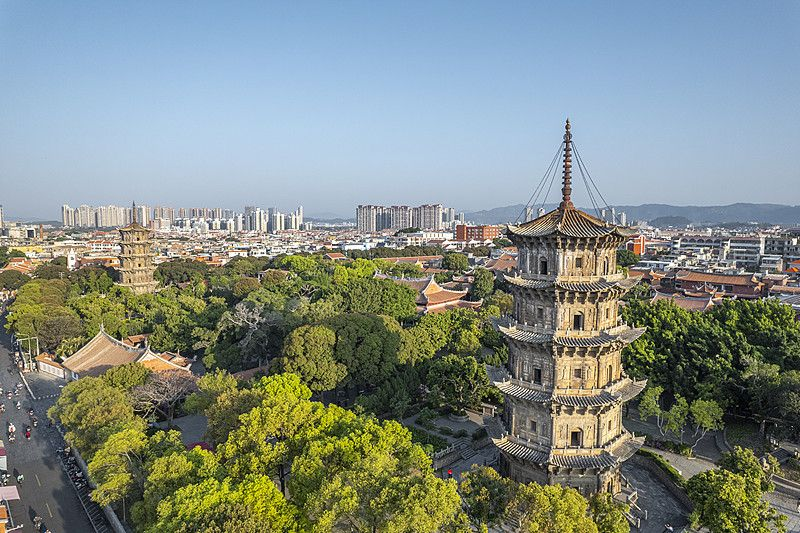
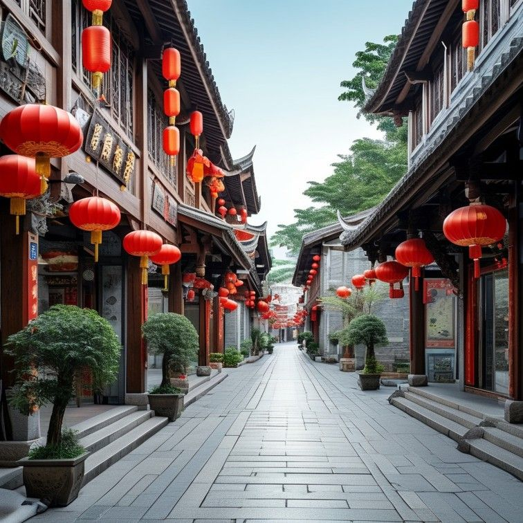
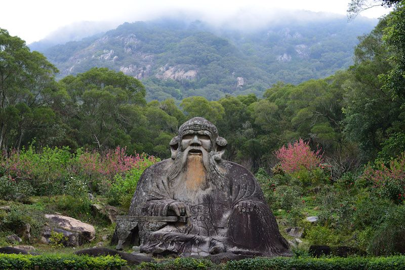
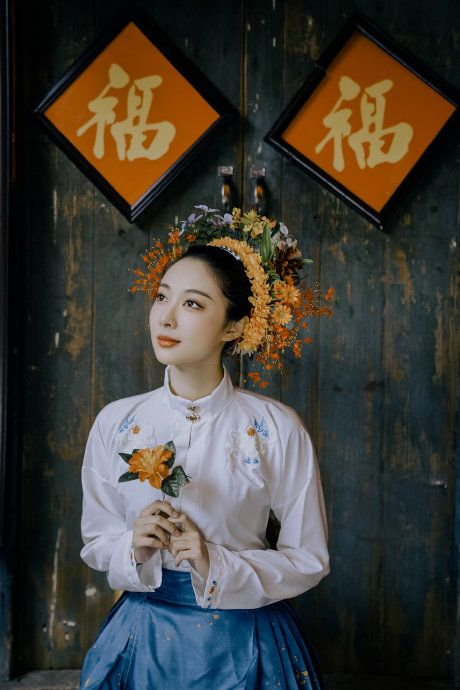

QUANZHOU · FUJIAN · CN
泉州 3 日
刺桐花下 · 千年商港
宋元东方第一大港，多元宗教在此交汇。漫步开元寺东西塔、西街老巷与洛阳古桥，做一回「半城烟火半城仙」的过客。
📍 福建泉州
🗓 建议 2–3 天
🧭 古城mini漫步
开元寺东西塔 · 西街 · 清源山 · 洛阳桥 · 蟳埔簪花




全年皆宜；春秋（3-5月、9-11月）最舒服，避开端午竞渡与夏季台风。
老城景点集中，步行+公交+摩的最方便；去洛阳桥/蟳埔打车或公交皆可。
开元寺、西街免费；清源山收门票（老君岩为其中一景）。各点现场/线上购票即可。
泉州的魅力在巷子里的烟火气，留些随意闲逛的缝隙比塞满行程更「对味」。
住这里步行就能逛开元寺与西街夜景，是泉州的first-choice。
💡 泉州不大，住老城 3 晚可能略多，2 晚足矣——把第 3 晚留给周边晋江或放慢节奏。
WorldStip 旅行小册子 · 泉州 3 日 · WEAR A STAMP · QUANZHOU 2026